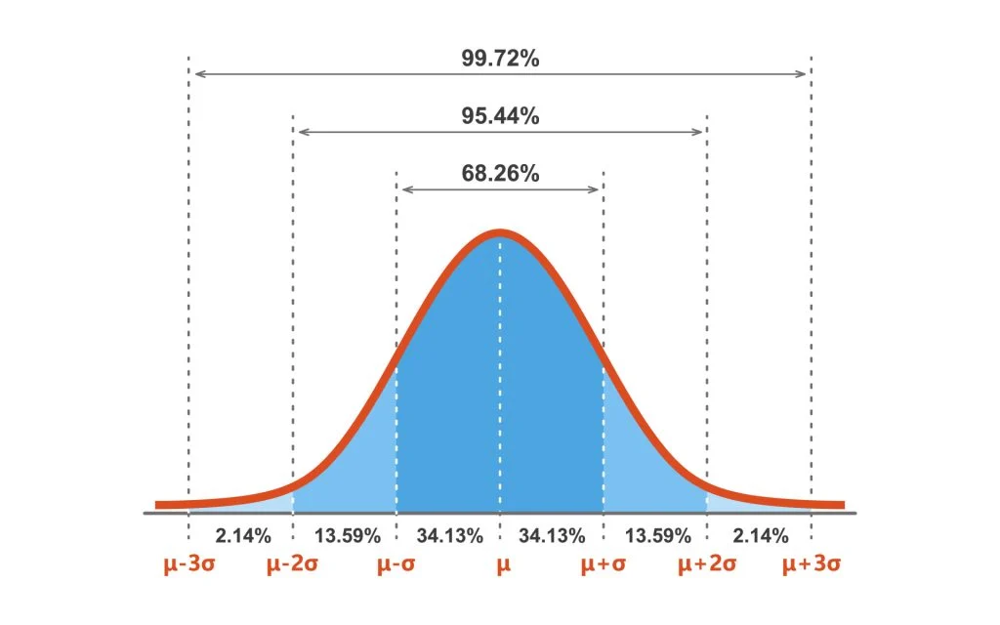

Sampling and Distributions
There are three kinds of Lies: Lies, Damned Lies, and Statistics.
Benjamin Disraeli (probably).
As we muddle through data analysis, we will also be muddling through some basic concepts in statistics. Here we cover arcane topics such as:
- Population vs Sample
- Normal Curves
Useful Stats Resources
Populations and Samples
When collecting data, it's good to know the data's provenance:
- Where did this data come from?
- How Representative is this Data?
Reference: Investopedia - Populations
Important Terminology
- Population (N): the complete set of items or events that share a common attribute, from which data can be gathered and analyzed. Whatever it is that you want to know about. Note the big "N" here. Measuring the entire population is usually not practical due to its size, cost, or logistical challenges.
- Sample (n): a subset of the Population. Note the little "n" here. This is typically what you measure.
- Non-probability Sampling: A sample from what's available, what was convenient to collect. Great for starter data, but may not be representative
- Random Sampling: Samples selected using a randomized technique designed to increase the validity (or representativeness) of the sample

Examples of Populations vs samples. Populations (in pink) can be All US Citizens, all Adult US citizens, or even just adult citizens in the state of Colorado. Samples (in yellow) would be subsets of whatever you define as your population.
Adapted from Psych Explained: Random Sampling
Groups
Often we break our samples down into different categories, or groups. Very often, you will read about the Control Group or the Experimental Group. The Control group is typically the unmodified group, while the Experimental group has been treated in some fashion (sometimes called the Treatment Group).
So, for example, we could break our CO Citizens Samples down into two groups as follows:
- Control Group: those who have never tried marijuana before
- Experimental group: those who use marijuana daily
And then we measure something else, like response time, and use statistics to determine if there is a difference in response time between the groups.
External Validity
External what?
External Validity is a just a fancy term for defining how representative your sample (n) is of the population (N).
The key to a good sample is that it is representative of the entire population. For example, if your population is 50% women, then your sample should be 50% women.
- High external validity: Your sample is representative
- Low external validity: not so much. Your sample may have some bias or is too small (and maybe has a large number of outliers)
With a representative sample that has high external validity, you can make inferences (or predictions) about the population at large.
The Bell Curve is Normal

When you measure things, like humans, you will find that their parts vary: height, weight, foot size, the spacing between the eyes (I'm looking at you, Anya Taylor Joy). But each of these measurements won't vary too greatly between humansthey tend to fall with a certain range. If you take a large enough sample (>30) and plot the measurements as a histogram, you should get a histogram that looks something like this:

Histogram of Female Heights. In this sample of 1000 women, the average height was 63.2 and the standard deviation was 0.25. Notice how the most frequent heights are clustered around the mean in the center of the histogram. Also notice we don't have any 50" or 80" women (4'2" or 6'7") in our sample.
Generating Normal Data for the above Histogram
No women were actually measured for the creation of the above histogram. Instead, we used the random number generator randn in the following code.
mu = 63.7; % mean height of women as reported on google
sigma = 2.5; % standard deviation
heights = sigma.*randn(1000,1)+mu; % generate random numbers with mean mu and std sigma
histogram(heights) % plot histogram
xline(mu,'--r','mean')
title(sprintf("Average Female Height = %1.2f%1.2f",mu,sigma))
xlabel("Height (in)")
If you fit a curve to this histogram, you get a bell-shaped curve.

In fact, this bell-shaped curve was so common, they called it a "Normal" curve (1).
- Or, if you're boring, a "Gaussian" curve, after the wrong mathematician Johann Gauss.
Anatomy of a Normal Curve
A normal curve is determined by two components:
- The Mean: which determines the center of the curve.
- The Standard Deviation (SD): which determines the width of the curve
In a Normal Curve, the Mean, Median, and Mode are all equal.
The Empirical Power of the Bell Curve
I guess that's interesting, but how does that help me in the real world?
The bell curve is so powerful because it allows us to calculate the probability of any value in reference to the mean and standard deviation. This something is called a Normal Probability Density Function (PDF)a fancy term for the math function that creates the normal curve.
Key points about the Probability Density Function (PDF)
- It is a mathematical function that generates the normal curve.
- It describes the likelihood of a value occurring within a specific range.
- The area under the curve represents the total probability, which equals 1.

The Normal Probability Distribution Function can predict frequency. : the mean, : the standard deviation. Adding up the area under the curve gives you the percentage of measurements that fall in that range. For all normal distributions, 68.3% of the observations will appear within plus or minus one standard deviation of the mean; 95.4% will fall within +/- two standard deviations; and 99.7% within +/- three standard deviations. This fact is sometimes called the "empirical rule", because people (math nerds) saw this phenomenon happen over and over. Read more about PDFs here if you are looking for a good soporific.
So, for the heights of females, 68% of all heights would fall between -1SD and +1SD, and 95% of heights fall between -2SD and +2SD. We can use these facts to predict the likelihood of any height. For example, a height of 64" would be pretty likely asmost female heights fall in that range. And a female height that falls outside three SD from the mean, such as 71.2", would be fairly unlikely. In the population of women, there are relatively few women with a height of 5'11" or greatera condition vernacularly known as being "really tall".

Not sure this helps me in the real world, but ok.
Seeing normality
When analyzing data, it is important to first visualize that data to get a good idea of its distribution. When you do so, look for symmetry in the distribution plot. This is often an indicator of normality.
Consider the following comparison of a box plot vs the histogram of the height data:

Here we have the same female height data plotted as a both a box plot and a histogram. We have turned the histogram on its side for easier comparison. In the histogram, the bars are symmetrically arrayed on either side of the mean (dotted red lin). In the box plot, the mean (middle blue line) is in the center of the interquartile range (IQR) box, or the middle 50% of the data. Also, the whiskers extend to an equal extent on either side of the IQR. Notice in the bar plot how the mean and the median are equal.
Code to Plot Box Chart and Histogram
Box Plots vs Normal Curves
Box plots summarize the data differently then PDFs. A box plot breaks down the distribution by quartiles, while PDFs use the mean and standard deviation.
IQR = interquartile range. The length of a whisker is typically 1.5 times the IQR.
A similar symmetry around the mean can be seen in swarm and violin plots.
Swarm and violin charts of the female heights. Notice that the fattest parts of the plots are centered around the median. This is where the majority of the data is concentrated.
Code to Plot Swarm and violin plots
Size matters for Normality
Sample size is an important consideration for data processing. Generally, larger sample sizes offer more reliable results, but practical considerations like cost and time may limit how large a sample may be. A sample of size greater than 30 is often considered to be a good target to for a normal distribution.
As shown below, low sample size can be susceptible to large random effects. Even if a sample comes from a large, normally distributed population (like the heights of all Women), you likely won't get a normal distribution in the sample if your sample size is too small.
Here we plot a histogram of a female heights with an increasing sample size (n). We don't really see a normal distribution until
n=30
Code to generate the above tiled histogram figure
Skewed Distributions
There are, of course, other types of data distributions. A unimodal skewed distribution has an asymmetry in the distribution. For example, consider the following:
Left Skewed Data. In this histogram, the high frequency data is piled up high on right side of the plot, while much of the low frequency data is spread across the left side of the plot. This low frequency data is sometimes called the tail of the plot. Such a distribution of the data is considered to be Skewed Left because the tail is to the left of the high frequency data.
Notice that the histogram is not well fit by a normal curve (orange curve) there's a big hump on the right and a long tail on the left. By comparison, the following data is skewed right

Right Skewed data. Here, the tail is to the right of the highest frequency data.
Skewed Mean vs Median
In Normal data, the mean and median are equal. In skewed data, they are not.
Notice in both datasets that the median value is closer to the highest frequency value (mode) than the mean value. So, for skewed data, you often report the median because it is more representative of the data.
Code to generate Histogram Plots
Some of this code adapted from the Mathworks Exploratory Stats documentation.
Visualizing Skewed Data in Distribution plots
To spot skewed data, look for asymmetry in the plots. Here we plot our skewed data as box plots.

Notice for both plots, how the median is off-centered in the interquartile box. The open-face blue circles indicate the outlier data, which are found in the tails of the skewed distributions. There is also an asymmetry in the extent of the whiskers on either sides of the boxes.
Code to generate Box Plots
And here is the same data as a swarm chart overlaid on a box plot

Swarm charts add jitter along the x-axis to highlight density so that the fattest (or widest) parts of the plot have the most data points and clustered around the median. As you can see in these plots, fat regions will be off-centered for a skewed dataset.
Code to generate Swarm Charts
The shapes of a swarm and violin chart are basically the same since they both use the same density function to determine the extent of the jitter along the x-axis.
Here we overlay a violin plot on the scatter plot to highlight the similarity in their shapes.
Code to Generate the Violin Charts
Distributions all the way down
There are a lot more distributions beyond the scope of this guide. Search for 'probability distributions' if you're interested.